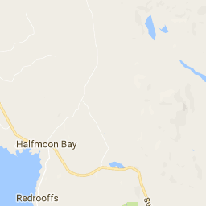
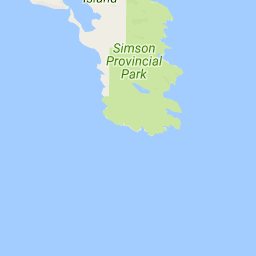
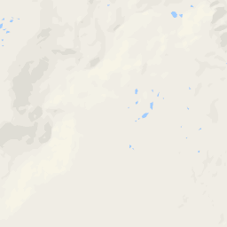

Lo sentimos, no Disponemos de Imágenes para this Vista

$ 425K
$ 425K
Trate de interactuar con el marcador (mouseover, mouseout, clic, doble clic, ratón, ratón hacia arriba, arrastrar) para ver un registro de eventos que se disparan. Eventos se activan si está interactuando con la parte de marcador o la porción de etiqueta.